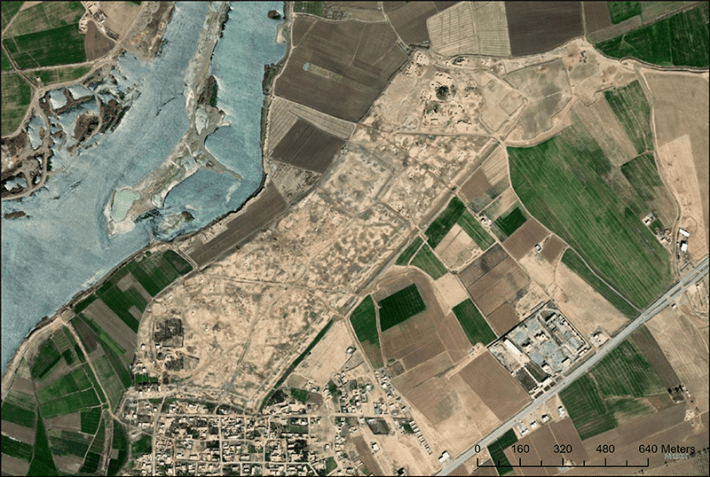
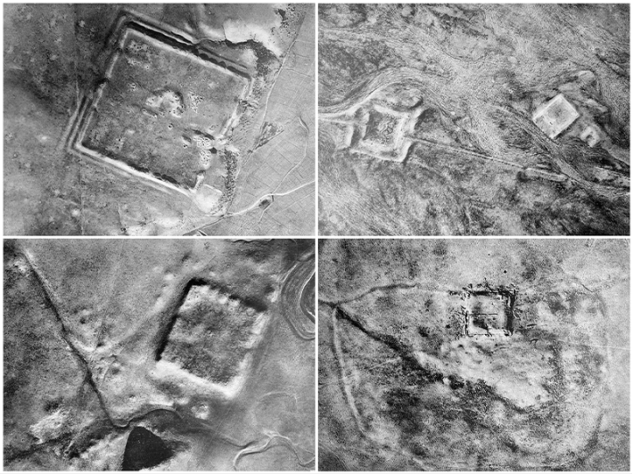
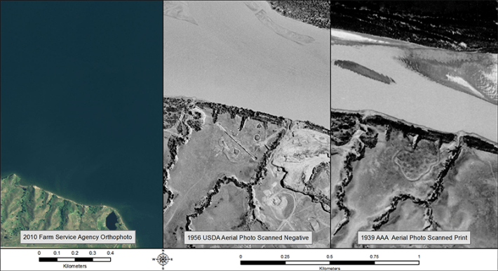

Archaeologist Jesse Casana was scrolling through thousands of aerial images on his computer looking for signs of ancient sites. The images, taken from planes and drones over the Middle East, harbored definitive evidence of old Roman forts. But spotting them required the trained eye of a seasoned archaeologist. And hours and hours of time.
Archaeology happens at many different scales—from the single shard of pottery to full landscapes and networks of civilizations. Each has its own challenges, and for Casana’s work, one of the big challenges was volume. He was up to 400 forts with at least a couple of thousands more to go—tedious work that was taking a long time. “I’ve been doing this my whole career, I go fast, and I’m good at finding things,” he says. “But this was a really big area, and I could use some help.”
At the time, in early 2023, Casana, founder and director of the Spatial Archeometry Lab at Dartmouth College, didn’t have many options. He tried enlisting his students to help, but that didn’t work well. “They were very earnest, but not very good,” Casana shares. “They missed real forts and found things they thought were forts, when they weren’t. I had to redo their work.” He was thinking about what else he could do. And then he had a Eureka moment.
“The very first aerial photos of an archaeological site were taken over Stonehenge with a hot air balloon.”
It was right around then that AI-powered tools, such as ChatGPT, began surging into everyday life, answering questions, writing term papers, and even detecting tumors in medical images. Casana wondered if he could train an “AI-rcheology” model to spot archaeological sites to speed up the process. “I was hoping I could get a new AI friend that is almost as good as me.”
Archaeology may not always come to mind as a hotbed of high-tech work. We’ve been trained by books and movies to conjure archaeologists burrowing into the ground in deserts and valleys in remote parts of the world, unearthing ancient objects, dusting them off, perhaps hand-writing some field notes.
Casana, however, would like to correct this misconception. Archaeologists have always been keen on technological advances, he says. And not only for time-saving reasons. Being able to study relics of the past—from cities to structures—from a distance also avoids many challenges inherent in digging things up, including access to land, the ethics of artifacts, and the labor itself. As the field of digital archaeology has taken off, enabled by drones and new imaging technology, AI has emerged as the next promising tool to help scientists comb through the vast troves of data. But it, too, comes with pitfalls, and some experts say it should be used with caution and supervision.
Almost as soon asarchaeologists could get a bird’s eye view of sites, they leapt at the chance. “The very first aerial photos of an archaeological site were taken over Stonehenge with a hot air balloon, before planes were even invented,” Casana says. Once planes and satellites began to fly, archaeologists started using even more aerial imagery. As Geographic Information Systems (GIS) became widely available in the second half of the 20th century, it became a tool, too, almost as essential as the old fashioned pick and hammer.
Camera-carrying drones now let researchers peek at places they couldn’t access before. Thermal cameras enabled them to see walls and other stone objects buried underground—because rocks heat up and cool off differently than the surrounding dirt, giving off different thermal signatures. Ground penetrating radar (GPR) uses electromagnetic pulses to reconstruct what’s beneath the soil, allowing one to see even more over large swaths of land. Light detection and ranging or LIDAR uses laser light to measure distances, allowing researchers to create 3-D maps of landscapes, revealing hidden structures and features beneath vegetation or soil.

EYES IN THE SKIES:Archaeologists have been using aerial views to assist with their work since the days of the early hot air balloons. Since then, different imaging technologies have improved their abilities to find and study ancient sites like this one, a Roman site in eastern Syria. The next frontier is AI. Credit: Maxar (2018).
Buried in that digital information, archaeologists have been diligently digging from under it—but that takes time. In the years preceding widely available AI, they tried teaching computer systems to identify the spots of interest in that data deluge. “The archaeologists were very enthusiastic adopters of the idea that we could get the computer to do the work of finding things in the imagery,” Casana says, but the early attempts foundered. “I was a famous skeptic of these approaches,” he shares. “I published two papers in which I talked about how disappointing they were.”
For most of his career, Casana advocated for what he brands as the “brute force” method. “If you want to find the stuff, you should just look at everything with your eyes,” he says. “But now, I realize that I might be wrong,” he says, especially with new AI systems that can learn from human feedback and from their own mistakes.
The easiest way toteach AI to identify specific objects is to train it on objects that are highly regular, says Emily Hammer, associate professor of digital humanities at the University of Pennsylvania. For example, some temples may have similar features, but they may differ, too, from site to site or over time periods. “That’s a big problem with archaeology because the past is not regular,” Hammer says. But there are some exceptions. For a few years, Hammer has been working on mapping caravanserais in Afghanistan—ancient hotels that dot the Silk Road, a trade route that connected the East and West for centuries.
The caravanserais have a typical structure, Hammer explains. There’s a road that leads in through a monumental entrance. There’s a courtyard in the middle, surrounded by rooms. There are places to house the pack animals that carried the goods. “These things tend to be of a fairly regular size, and they were built along the roads in isolated areas,” says Hammer. All these characteristic attributes make caravanserais an easier training model than rarer structures.
Thermal cameras enabled them to see walls and other stone objects buried underground.
Hammer’s work on these structures focused on Afghanistan, but caravanserais existed all over Central Asia, so once trained, the AI will be able to plow through hundreds of thousands of old photos and maps and point archaeologists to the previously unknown sites. “We are planning to use Soviet maps that were created in the ’40s through ’60s,” says Hammer, referring to a future project she and Casana are hoping to do together. “These Soviet cartographers were incredibly skilled,” she adds, so the maps are of very good quality.
The recently declassified spy aerial photos from the mid 20th century can help, too. In fact, they may be a veritable boon for digital archaeologists because they captured part of the world that no longer exists. “People don’t realize the degree to which the archaeological record has been destroyed by mechanized agriculture, irrigation, the expansion of cities and industrialization,” Casana says—particularly in the past few decades. But the sites remain preserved, in a digital way, in the old, recently declassified photos.

PATTERN HUNTING:AI still doesn’t have the nuanced interpretive skill of a trained human archaeologist, but it is a workhorse at finding patterns in images, and spotting similar structures within large expanses of land, such as these ancient Roman Forts. Credit: Casana et al. (2023).
“That’s where AI can do a better job,” says Hammer. “It could find them where we know they were. And then we can use it to search on a much broader scale, at the level of countries or continents, because we can’t do that with our own eyes.”
This project is one of 10 initial projects supported by the Humanities and AI Virtual Institute (HAVI) at Schmidt Sciences, which provides funding for research that brings together AI experts and humanities scholars to unlock secrets of human history and culture.
Developing archaeologically savvy AI models offers other advantages. AI may allow scientists to reduce the number of excavation projects. “I used to run big excavations in the Middle East for many years,” Casana says. “A lot of people assume that, as an archaeologist, my goal is to dig a hole in the ground, but really, if I never dig another hole in the ground, I’ll be okay with that.”
That’s because there are better ways to learn about our past than digging through dirt, he explains. Excavating is far from ideal. It creates ethical problems, as many communities don’t want to disturb the sites. Some sites are on private land, which is usually off limits. Once you dig up the hole, you can’t “un-dig it,” so if you make mistakes, such as accidentally breaking a structure, you can’t redo it. The excavating process is time consuming and labor intensive, which makes it very expensive. Plus, it produces an enormous number of artifacts that must be taken care of indefinitely—preserved, cataloged, and stored in proper conditions somewhere.
Recently declassified spy aerial photos captured part of the world that no longer exists.
Which is another reason Casana and others have been embracing digital archaeology methods, which are cheaper, faster, and less destructive. “With these new technologies we can learn about the human past without ever disturbing the soil,” Casana says. “We record it, we map it, we interpret it, we take only data, we leave only footprints, and we get out of there. That’s my preferred way to do archaeology today.”
Hammer doesn’t think that remote imaging and AI analysis will entirely replace excavating. Digital tools generate a “flattened” picture of what’s underground—they compress centuries and even millennia together. Researchers can’t yet fully tell from the digital images whether a site was originally a small village that grew into a big city, or whether the city shrank over time.
Physically uncovering layers allows archaeologists to understand the chronology of a site and date the materials they find in the proper order, which is key for understanding the trajectory of an ancient settlement or a society.
“As digital archaeologists, we believe in the power of our tools to tell an important part of the ancient story, but I don’t think we’re ever going to replace going into the field,” Hammer says. “If we were to conflate things that happened in one place, we wouldn’t have an accurate picture of history at all, without excavation.”

DIGGING THROUGH DATA:An unexpected source of archaeological new revelations are old aerial images, such as these, spanning more than seven decades. Water has consumed this site, but early and mid 20th-century images reveal clues as to what was there long before. AI can help sort through mounds of these records to help tip off humans for a closer look. Credit: Clark and Casana (2016).
There is still more due diligence that AI and remote-sensing can’t replace, Hammer says. “I also don’t think we should be interpreting history without the knowledge of people who live on that land and probably consider the people of the site to be ancestral to them in one way or another.”
Keeping humans in the loop is crucial to avoid perpetuating biases that exist in the archaeological field today, says Colleen Morgan, a senior lecturer in digital archaeology and heritage at the University of York in the United Kingdom.
This is particularly important when turning to AI to take the next creative leap in interpreting the past—not just analyzing images, but generating them. Even before AI, many human-created visualizations of past societies were often biased, for example, depicting only men hunting, making tools, or performing rituals, Morgan notes.
“These reconstructions do not reflect scientists’ nuanced understanding of the past. We know humans organized themselves in an incredible array of variety, with a multitude of gender roles and self-expression,” Morgan wrote in a recent essay in The Conversation. “Generative AI has both fascinating potential and enormous risk for archaeological misrepresentation.”
Hammer suggests that, when used thoughtfully, AI could also help reduce some biases. Historically, archaeologists have favored certain types of places for studies. “They like to excavate temples and wealthy tombs and palaces, so the everyday person’s life is sometimes left out of that narrative,” Hammer says. AI might be more able to help find more subtle structures, for example, the places where an average person lived.
For their work on new “AI-rcheology” models, Casana and Hammer aren’t planning to give AI a lot of interpretational power. Its main task will be to quickly analyze reams of information and present its findings. “And then I, a human, can take that information and make some meaning from it,” Casana says.
This is how the real magic usually happens in archaeology, he notes, including excavations. “We dig some holes and find some things, but then we have to explain to people why this is significant and interesting,” he says. It takes people to interpret the lives of those who had been there before us, he adds. “And this will remain the job of humans.” 
Lead image: StockStudio Aerials / Shutterstock